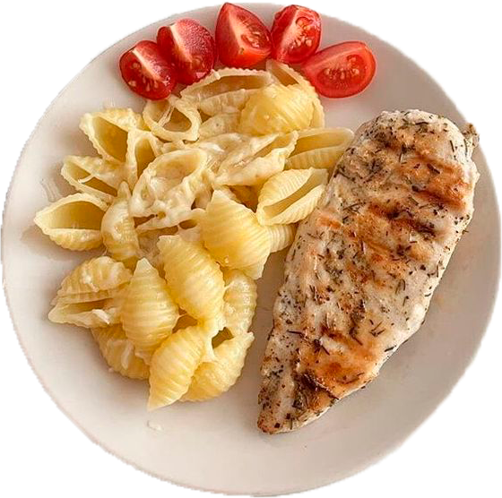

Курица
Ингредиенты:
- 500 г творога
- 1 яйцо
- щепотка соли
- 2 ст. л. сахара
- 2 ст. л. манной крупы
- 1 ст. л. муки
- панировочные сухари
- растительное масло для обжаривания
Рецепт:
Замесить тесто, смешав творог, яйцо, соль,
сахар, манку и муку. Сформовать сырники, обвалять
их в сухарях и обжарить с двух сторон на растительном масле на среднем огне.
Добавить сметану или варенье, а также ягоды по желанию.